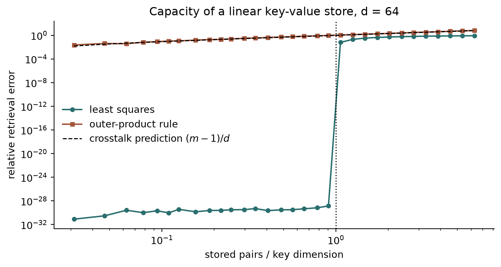
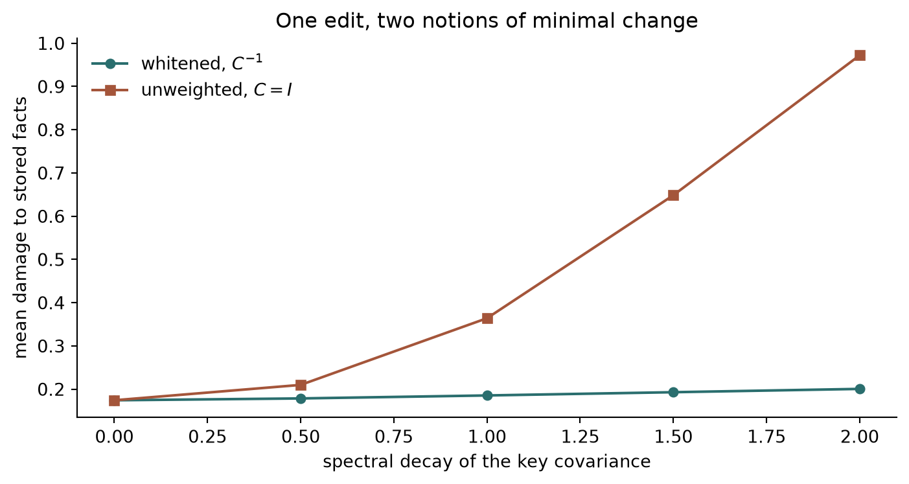
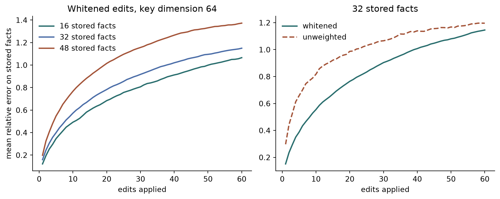

Deriving the rank-one weight edit from a constrained least-squares problem shows exactly which other facts it damages, and why retrieval eventually wins.
Author
Diego Filippo Marino
Published
August 14, 2026
Causal tracing localizes factual recall in a transformer to a specific place: the middle-layer feed-forward blocks, read at the last token of the subject (Meng et al. 2022). Corrupt the subject embeddings, restore one hidden state at a time, and the states that recover the prediction cluster there. The follow-up move is to treat the down-projection of that feed-forward block as a linear key-value store and write a new association into it with a closed-form rank-one update.
The rank-one formula is usually quoted as a result. It is more useful as a derivation, because the derivation says something the formula alone does not: it tells you exactly which other facts the edit disturbs, and by how much. That quantity has a clean form, it depends on a whitening matrix that is often described as a technical detail, and it predicts the shape of the degradation curve when edits are applied one after another.
This article derives the update from a constrained least-squares problem, reads the collateral damage off the Lagrange multiplier, checks both against simulation, and then compares the whole approach against the alternative of keeping facts outside the weights entirely. A companion piece on this blog, The Rank of Memory, looks at a different bottleneck, how much information crosses a sequence boundary. The bottleneck here is orthogonal to it: how many independent associations a fixed weight matrix can hold before they start reading each other’s mail.
A linear associative memory and its capacity
Take a matrix W \in \mathbb{R}^{d_{\text{out}} \times d} used as a lookup table. Keys k_i \in \mathbb{R}^{d} go in, values v_i \in \mathbb{R}^{d_{\text{out}}} come out, and storage means arranging that W k_i \approx v_i for all i. With K = [k_1,\dots,k_m] and V = [v_1,\dots,v_m], the least-squares solution is W = VK^{+}.
The capacity question is what happens as m grows. Consider the simplest case, random unit-norm keys and the Hebbian construction W = \sum_j v_j k_j^\top. Reading with key k_i gives
so the retrieved vector is the target plus a sum of m-1 interference terms weighted by key overlaps. For independent random unit vectors in \mathbb{R}^d, \mathbb{E}[(k_j^\top k_i)^2] = 1/d, so the expected squared norm of the interference is (m-1)/d times the typical value norm. Signal-to-noise degrades like d/m, and the memory saturates when m approaches d.
Least squares does better than the Hebbian rule, exactly until it cannot. For m \le d, random keys are linearly independent with probability one, so W = VK^{+} achieves Wk_i = v_i exactly for every i. Past m = d the system is overdetermined and errors appear. The transition is sharp and worth seeing.
import numpy as npimport matplotlib.pyplot as pltDIM, VALUE_DIM =64, 32rng = np.random.default_rng(0)def store(m, rule, rng): K = rng.normal(size=(DIM, m)) K /= np.linalg.norm(K, axis=0, keepdims=True) V = rng.normal(size=(VALUE_DIM, m)) / np.sqrt(VALUE_DIM) W = V @ K.T if rule =="hebbian"else V @ np.linalg.pinv(K) residual = W @ K - Vreturnfloat(np.mean(np.sum(residual **2, axis=0) / np.sum(V **2, axis=0)))loads = np.unique(np.round(np.geomspace(2, 400, 34)).astype(int))curves = {}for rule in ("least squares", "hebbian"): curves[rule] = [np.mean([store(m, rule, np.random.default_rng(97* t + m))for t inrange(12)]) for m in loads]fig, ax = plt.subplots(figsize=(7.4, 4.0))ax.loglog(loads / DIM, curves["least squares"], "o-", ms=4, color="#2a6e6e", label="least squares")ax.loglog(loads / DIM, curves["hebbian"], "s-", ms=4, color="#a4553a", label="outer-product rule")ax.loglog(loads / DIM, np.maximum(loads -1, 1) / DIM, "k--", lw=1.1, label=r"crosstalk prediction $(m-1)/d$")ax.axvline(1.0, color="black", ls=":", lw=1.1)ax.set(xlabel="stored pairs / key dimension", ylabel="relative retrieval error", title=f"Capacity of a linear key-value store, d = {DIM}")ax.legend(frameon=False)ax.spines[["top", "right"]].set_visible(False)plt.tight_layout()plt.show()

Figure 1: Retrieval error of a linear associative memory as the number of stored pairs crosses the key dimension. Least squares is exact below the threshold and degrades past it; the Hebbian outer-product rule degrades from the start, at the rate the crosstalk calculation predicts.
The dashed line is Equation 1 with no fitted constants, and the outer-product curve follows it. The least-squares curve sits at numerical zero until the load ratio reaches one and then climbs to meet it. A linear memory of key dimension d holds about d facts for free and charges interference for every one after that.
This is the sense in which a feed-forward block can be a factual store, and also the sense in which it is a lossy one. It is worth contrasting with the nonlinear case. A modern Hopfield network stores patterns as minima of an energy whose one-step retrieval is \xi^{\text{new}} = X\,\mathrm{softmax}(\beta X^\top \xi), which is exactly a transformer attention update, and whose capacity is exponential rather than linear in the dimension (Ramsauer et al. 2021). The softmax is doing the work: it selects rather than superposes, so well-separated patterns do not interfere. Attention layers get the exponential version of this bargain, feed-forward layers get the linear one, and it is the linear one that admits a closed-form edit.
The edit as a constrained projection
Now the question that model editing asks. We have a working memory W and want to insert one new association (k_*, v_*) while disturbing everything else as little as possible. Written as an optimization, that is
where C is a positive definite matrix defining what “disturbing” means. Solving this is a short calculation. Write \Delta = W' - W and r = v_* - Wk_*, the residual the current memory leaves on the new key. The constraint is \Delta k_* = r. Introducing a Lagrange multiplier \lambda \in \mathbb{R}^{d_{\text{out}}},
and setting \partial \mathcal{L}/\partial \Delta = 2\Delta C - \lambda k_*^\top = 0 gives \Delta = \tfrac12 \lambda k_*^\top C^{-1}. Substituting into the constraint fixes the multiplier, \tfrac12\lambda (k_*^\top C^{-1} k_*) = r, and the solution is
\boxed{\;\widehat W \;=\; W \;+\; \frac{\bigl(v_* - Wk_*\bigr)\,\bigl(C^{-1}k_*\bigr)^{\top}}{k_*^{\top} C^{-1} k_*}\;}
\tag{3}
The update in Equation 3 is rank one, requires no gradient step, and is the exact minimizer of Equation 2. This is the form the model-editing literature uses, with C = KK^\top estimated as an uncentered covariance of keys collected from a large text sample (Meng et al. 2022).
Why that particular C? The objective Equation 2 penalizes \lVert \Delta C^{1/2}\rVert_F^2 = \operatorname{tr}(\Delta C \Delta^\top), and if C = \mathbb{E}[kk^\top] over the distribution of keys the model actually sees, then
So Equation 2 is not minimizing the change to the weights. It is minimizing the expected change to the outputs, averaged over the keys that occur in practice. That is a materially different thing, and it is the reason the covariance matters rather than being a numerical nicety.
Reading the collateral damage off the formula
The derivation hands us the damage for free. For any other key k, the change in the memory’s output is
\widehat W k - W k \;=\; \bigl(v_* - Wk_*\bigr)\,\frac{k_*^\top C^{-1} k}{k_*^\top C^{-1} k_*}.
\tag{5}
Three things follow immediately from Equation 5, and none of them are obvious from the statement that the update is rank one.
First, the damage direction is the same for every key. Every disturbed fact is pushed toward the new value v_*, never in some other arbitrary direction. An edit that inserts one association contaminates its neighbours with that same association rather than scrambling them.
Second, the damage magnitude is controlled by a whitened inner product k_*^\top C^{-1} k, not by the raw similarity k_*^\top k. Two keys that look similar in the ambient space but differ along a low-variance direction of C will have a large whitened separation and will barely interact. Two keys that differ only along a direction the model rarely uses will interact strongly. The choice of C is therefore a choice about which notion of “nearby fact” the edit respects.
Third, setting C = I recovers the naive projection, which minimizes the change to the weights and ignores what the keys look like. Comparing the two is a direct test of whether the whitening earns its keep.
def anisotropic_keys(rng, n, dim=DIM, decay=1.0):"""Keys drawn from a covariance with a power-law spectrum.""" spectrum = np.arange(1, dim +1) ** (-decay) basis = np.linalg.qr(rng.normal(size=(dim, dim)))[0] root = basis @ np.diag(np.sqrt(spectrum)) @ basis.Treturn root @ rng.normal(size=(dim, n)), rootdef edit(W, k_star, v_star, C_inv): residual = v_star - W @ k_star direction = C_inv @ k_starreturn W + np.outer(residual, direction) /float(k_star @ direction)def one_trial(decay, rng, m=40): K, root = anisotropic_keys(rng, m, decay=decay) V = rng.normal(size=(VALUE_DIM, m)) / np.sqrt(VALUE_DIM) W = V @ np.linalg.pinv(K) C = root @ root.T C_inv = np.linalg.inv(C +1e-8* np.eye(DIM)) k_star = root @ rng.normal(size=DIM) v_star = rng.normal(size=VALUE_DIM) / np.sqrt(VALUE_DIM) out = {}for name, matrix in (("whitened", C_inv), ("identity", np.eye(DIM))): W_new = edit(W, k_star, v_star, matrix) efficacy =float(np.linalg.norm(W_new @ k_star - v_star) / np.linalg.norm(v_star)) damage =float(np.mean(np.linalg.norm(W_new @ K - V, axis=0)/ np.linalg.norm(V, axis=0))) out[name] = (efficacy, damage)return outdecays = [0.0, 0.5, 1.0, 1.5, 2.0]summary = {"whitened": [], "identity": []}efficacy_check = []for decay in decays: trials = [one_trial(decay, np.random.default_rng(500+13* t)) for t inrange(40)]for name in summary: summary[name].append(np.mean([t[name][1] for t in trials])) efficacy_check.append(max(max(t[name][0] for name in summary) for t in trials))fig, ax = plt.subplots(figsize=(7.4, 4.0))ax.plot(decays, summary["whitened"], "o-", ms=5, color="#2a6e6e", label=r"whitened, $C^{-1}$")ax.plot(decays, summary["identity"], "s-", ms=5, color="#a4553a", label=r"unweighted, $C = I$")ax.set(xlabel="spectral decay of the key covariance", ylabel="mean damage to stored facts", title="One edit, two notions of minimal change")ax.legend(frameon=False)ax.spines[["top", "right"]].set_visible(False)plt.tight_layout()plt.show()print(f"largest post-edit error on the new association: {max(efficacy_check):.2e}")

Figure 2: Efficacy and collateral damage of a single rank-one edit under anisotropic keys. Both variants install the new association exactly, but the whitened update disturbs held-out associations far less, and the advantage grows with the anisotropy of the key distribution.
largest post-edit error on the new association: 2.59e-15
Efficacy is identical by construction: both updates satisfy the constraint in Equation 2 exactly, so the new fact is installed to machine precision either way. What separates them is specificity, and the separation grows with anisotropy. When keys are isotropic the two objectives coincide and the curves meet. As the key covariance develops a spectrum, the unweighted update spends its change budget along directions the keys occupy heavily, and the whitened update does not.
This is the algebra behind the empirical finding that distinguishes rank-one editing from fine-tuning in the published comparisons. Fine-tuning a fact into the weights achieves efficacy and destroys specificity, because gradient descent on a single example has no term that asks what the change costs on the rest of the key distribution. Equation Equation 2 is that term, written down explicitly.
Edits accumulate
A single edit is cheap. The question that decides whether weight editing is a maintenance strategy is what happens after a hundred of them.
Each edit adds a rank-one term, so after n edits the accumulated perturbation has rank at most n, and by Equation 5 each one drags every stored fact toward its own new value. There is no cancellation to hope for: the terms are not orthogonal unless the whitened keys happen to be, and successive edits are applied to an already-perturbed matrix, so later residuals v_* - Wk_* are computed against a memory that is already degraded.
def sequential_edits(n_edits, m, rng, use_whitening=True): K, root = anisotropic_keys(rng, m, decay=1.0) V = rng.normal(size=(VALUE_DIM, m)) / np.sqrt(VALUE_DIM) W = V @ np.linalg.pinv(K) C_inv = np.linalg.inv(root @ root.T +1e-8* np.eye(DIM)) matrix = C_inv if use_whitening else np.eye(DIM) baseline = np.linalg.norm(W @ K - V, axis=0) trace = []for _ inrange(n_edits): k_star = root @ rng.normal(size=DIM) v_star = rng.normal(size=VALUE_DIM) / np.sqrt(VALUE_DIM) W = edit(W, k_star, v_star, matrix) err = np.linalg.norm(W @ K - V, axis=0) / np.linalg.norm(V, axis=0) trace.append(float(np.mean(err)))return np.array(trace), baselinen_edits =60fig, axes = plt.subplots(1, 2, figsize=(9.6, 3.9))for m, color inzip([16, 32, 48], ["#2a6e6e", "#4c6ea8", "#a4553a"]): traces = np.mean([sequential_edits(n_edits, m, np.random.default_rng(11* t + m))[0]for t inrange(25)], axis=0) axes[0].plot(np.arange(1, n_edits +1), traces, lw=1.8, color=color, label=f"{m} stored facts")axes[0].set(xlabel="edits applied", ylabel="mean relative error on stored facts", title=f"Whitened edits, key dimension {DIM}")axes[0].legend(frameon=False)for use_white, color, style in ((True, "#2a6e6e", "-"), (False, "#a4553a", "--")): traces = np.mean([sequential_edits(n_edits, 32, np.random.default_rng(11* t +5), use_white)[0]for t inrange(25)], axis=0) axes[1].plot(np.arange(1, n_edits +1), traces, style, lw=1.8, color=color, label="whitened"if use_white else"unweighted")axes[1].set(xlabel="edits applied", title="32 stored facts")axes[1].legend(frameon=False)for ax in axes: ax.spines[["top", "right"]].set_visible(False)plt.tight_layout()plt.show()

Figure 3: Degradation of stored associations under a sequence of rank-one edits. Left: three memory loads, where a fuller memory degrades faster. Right: the whitened and unweighted updates at a fixed load, where the whitening advantage is large for the first few edits and gone by the end.
Three readings, one of them a caution about the method rather than about editing.
Damage rises steeply and then flattens, but it flattens at relative error of order one, which is not a plateau in any comforting sense. It is the level at which the stored outputs have lost their correlation with the targets entirely. Between the first edit and the sixtieth, the memory goes from mostly intact to gone, and at no point does it stabilize somewhere useful.
The rate depends on how full the memory already was. At a quarter of capacity the first edit costs about 12% relative error on the held-out facts; at three quarters of capacity it costs about 20%, and the gap widens as edits accumulate. This is the capacity result of the first section reappearing: an emptier memory has unused directions for an edit to hide in, and a fuller one does not.
The whitening advantage is front-loaded. On the first edit the whitened update does roughly twice as well as the unweighted one, which is the specificity result of the previous section. By sixty edits the two are indistinguishable, because both have destroyed everything. Choosing the right notion of minimal change buys a better single edit, not a longer sequence of them.
That is the structural argument against treating weight editing as a knowledge-maintenance mechanism, and it is independent of how good any particular editing method is. Rank-one edits are a good way to change a fact. They are a poor way to run a database, because a database is defined by the operation being repeatable.
The alternative is to not store it in the weights
The other design keeps facts outside the parameters. A retrieval-augmented model pairs a parametric model with a non-parametric index, retrieves at inference, and conditions on what it finds (Lewis et al. 2020). RETRO takes this to a two-trillion-token database with a frozen retriever and chunked cross-attention whose cost is linear in the retrieved data, and reports that a model of 7.5B parameters conditioned on that database matches models roughly twenty-five times its size (Borgeaud et al. 2022).
The comparison in the language of this article is direct.
Table 1: Where a fact can live, and what each choice charges for.
Parametric memory
Retrieval index
Capacity
about d associations before interference
limited by storage, not by dimension
Cost of one more fact
interference on all others
one more row
Cost of an update
rank-one edit plus accumulating damage
overwrite a row
Compression across facts
automatic, shared structure is exploited
none, unless the encoder provides it
Retrieval cost
one matrix multiply
nearest-neighbour search plus attention over the results
Read down the columns, the tradeoff is not about capability but about which resource is scarce. A parametric memory is a compressor: it exploits structure shared between facts, which is exactly why a language model can answer questions it never saw verbatim, and it pays for that with interference and with an update path that degrades. An index is a lookup table: it has no interference and a trivial update path, and it exploits no structure at all beyond whatever the encoder put into the keys.
That predicts where each should be used, and the prediction matches practice. Facts that are numerous, mutually independent, and volatile belong in an index, because they get no benefit from compression and their update cost dominates. Regularities that generalize belong in the weights, because that is where sharing happens and there is nothing to update. The awkward middle is a fact that is both volatile and load-bearing for generalization, and neither mechanism handles that well.
NoteWhat causal tracing does and does not establish
It is worth separating two claims that are easy to merge. Causal tracing shows that certain hidden states are causally decisive for a prediction under a corrupt-and-restore intervention, with the average indirect effect concentrated at mid-layer feed-forward modules at the last subject token. Rank-one editing shows that a weight update at that same location changes the fact with both generalization and specificity. Together these are strong evidence that the location participates in factual recall.
They do not establish that the fact is stored only there, that the mapping between facts and weight directions is one to one, or that the linear key-value picture is the whole computation. The original work is explicit that any middle layer could equivalently store the fact. The linear associative memory here is a model of a mechanism, and the arithmetic above inherits whatever error that model carries.
Limits
Three worth naming.
The keys in a real transformer are not drawn from a fixed Gaussian, and the residual v_* - Wk_* is not a free parameter. Choosing v_* is itself an optimization, run to maximize the probability of the new object while holding the subject’s other properties in place, and the closed-form update is applied only afterwards. The simulations above skip that step entirely.
The damage metric here is the error on stored associations, which is a proxy for the specificity metrics used in practice, where the question is whether a nearby subject’s unrelated facts survive. Those metrics involve the full network downstream of the edited layer, and a small change in the feed-forward output can be amplified or absorbed by later layers.
And the sequential-edit result is a statement about repeated application of Equation 3, not about the best possible batched procedure. Solving for many associations jointly is a different and better-conditioned problem than solving for them one at a time, which is the direction later mass-editing methods take. The point that survives is the capacity bound in the first section: whatever procedure writes the facts, a linear store of key dimension d has about d independent directions to write them into, and edits beyond that are borrowing from facts already there.
References
Borgeaud, Sebastian, Arthur Mensch, Jordan Hoffmann, et al. 2022. “Improving Language Models by Retrieving from Trillions of Tokens.”Proceedings of the 39th International Conference on Machine Learning. https://arxiv.org/abs/2112.04426.
Lewis, Patrick, Ethan Perez, Aleksandra Piktus, et al. 2020. “Retrieval-Augmented Generation for Knowledge-Intensive NLP Tasks.”Advances in Neural Information Processing Systems 33. https://arxiv.org/abs/2005.11401.
Meng, Kevin, David Bau, Alex Andonian, and Yonatan Belinkov. 2022. “Locating and Editing Factual Associations in GPT.”Advances in Neural Information Processing Systems 35. https://arxiv.org/abs/2202.05262.
Ramsauer, Hubert, Bernhard Schäfl, Johannes Lehner, et al. 2021. “Hopfield Networks Is All You Need.”International Conference on Learning Representations. https://arxiv.org/abs/2008.02217.
Citation
BibTeX citation:
@online{marino2026,
author = {Marino, Diego Filippo},
title = {The {Arithmetic} of {Editing} a {Fact}},
date = {2026-08-14},
url = {https://diegofilippomarino.github.io/Eigenholm/posts/arithmetic-of-editing-a-fact/},
langid = {en}
}